This vignette will demonstrate pmxhelpr functions for
exploratory data analysis.
First, we will load the required packages.
options(scipen = 999, rmarkdown.html_vignette.check_title = FALSE)
library(pmxhelpr)
library(dplyr, warn.conflicts = FALSE)
library(ggplot2, warn.conflicts = FALSE)
library(Hmisc, warn.conflicts = FALSE)
library(patchwork, warn.conflicts = FALSE)
library(PKNCA, warn.conflicts = FALSE)For this vignette, we will perform exploratory data analysis on the
data_sad dataset internal to pmxhelpr. We can
take a quick look at the dataset using glimpse() from the
dplyr package. Dataset definitions can also be viewed by calling
?data_sad, as one would to view the documentation for a
package function.
glimpse(data_sad)
#> Rows: 720
#> Columns: 23
#> $ LINE <dbl> 1, 2, 3, 4, 5, 6, 7, 8, 9, 10, 11, 12, 13, 14, 15, 16, 17, 18,…
#> $ ID <dbl> 1, 1, 1, 1, 1, 1, 1, 1, 1, 1, 1, 1, 1, 1, 1, 1, 1, 1, 1, 1, 2,…
#> $ TIME <dbl> 0.00, 0.00, 0.48, 0.81, 1.49, 2.11, 3.05, 4.14, 5.14, 7.81, 12…
#> $ NTIME <dbl> 0.0, 0.0, 0.5, 1.0, 1.5, 2.0, 3.0, 4.0, 5.0, 8.0, 12.0, 16.0, …
#> $ NDAY <dbl> 1, 1, 1, 1, 1, 1, 1, 1, 1, 1, 1, 1, 2, 2, 3, 4, 5, 6, 7, 8, 1,…
#> $ DOSE <dbl> 10, 10, 10, 10, 10, 10, 10, 10, 10, 10, 10, 10, 10, 10, 10, 10…
#> $ AMT <dbl> NA, 10, NA, NA, NA, NA, NA, NA, NA, NA, NA, NA, NA, NA, NA, NA…
#> $ EVID <dbl> 0, 1, 0, 0, 0, 0, 0, 0, 0, 0, 0, 0, 0, 0, 0, 0, 0, 0, 0, 0, 0,…
#> $ ODV <dbl> NA, NA, NA, 2.02, 4.02, 3.50, 7.18, 9.31, 12.46, 13.43, 12.11,…
#> $ LDV <dbl> NA, NA, NA, 0.7031, 1.3913, 1.2528, 1.9713, 2.2311, 2.5225, 2.…
#> $ CMT <dbl> 2, 1, 2, 2, 2, 2, 2, 2, 2, 2, 2, 2, 2, 2, 2, 2, 2, 2, 2, 2, 2,…
#> $ MDV <dbl> 1, NA, 1, 0, 0, 0, 0, 0, 0, 0, 0, 0, 0, 0, 1, 1, 1, 1, 1, 1, 1…
#> $ BLQ <dbl> -1, NA, 1, 0, 0, 0, 0, 0, 0, 0, 0, 0, 0, 0, 1, 1, 1, 1, 1, 1, …
#> $ LLOQ <dbl> 1, NA, 1, 1, 1, 1, 1, 1, 1, 1, 1, 1, 1, 1, 1, 1, 1, 1, 1, 1, 1…
#> $ FOOD <dbl> 0, 0, 0, 0, 0, 0, 0, 0, 0, 0, 0, 0, 0, 0, 0, 0, 0, 0, 0, 0, 0,…
#> $ SEXF <dbl> 1, 1, 1, 1, 1, 1, 1, 1, 1, 1, 1, 1, 1, 1, 1, 1, 1, 1, 1, 1, 1,…
#> $ RACE <dbl> 2, 2, 2, 2, 2, 2, 2, 2, 2, 2, 2, 2, 2, 2, 2, 2, 2, 2, 2, 2, 1,…
#> $ AGEBL <int> 25, 25, 25, 25, 25, 25, 25, 25, 25, 25, 25, 25, 25, 25, 25, 25…
#> $ WTBL <dbl> 82.1, 82.1, 82.1, 82.1, 82.1, 82.1, 82.1, 82.1, 82.1, 82.1, 82…
#> $ SCRBL <dbl> 0.87, 0.87, 0.87, 0.87, 0.87, 0.87, 0.87, 0.87, 0.87, 0.87, 0.…
#> $ CRCLBL <dbl> 128, 128, 128, 128, 128, 128, 128, 128, 128, 128, 128, 128, 12…
#> $ USUBJID <chr> "STUDYNUM-SITENUM-1", "STUDYNUM-SITENUM-1", "STUDYNUM-SITENUM-…
#> $ PART <chr> "Part 1-SAD", "Part 1-SAD", "Part 1-SAD", "Part 1-SAD", "Part …We can see that this dataset is already formatted for modeling. It contains NONMEM reserved variables (e.g., ID, TIME, AMT, EVID, MDV), as well as, dependent variables of drug concentration in original units (ODV) and natural logarithm transformed units (LDV).
In addition to the numeric variables, there are two character variables: USUBJID and PART.
PART specifies the two study cohorts:
- Single Ascending Dose (SAD)
- Food Effect (FE).
unique(data_sad$PART)
#> [1] "Part 1-SAD" "Part 2-FE"This dataset also contains an exact binning variable:
- Nominal Time (NTIME).
This variable represents the nominal time of sample collection relative to first dose per study protocol whereas Actual Time (TIME) represents the actual time the sample was collected.
##Unique values of NTIME
ntimes <- unique(data_sad$NTIME)
ntimes
#> [1] 0.0 0.5 1.0 1.5 2.0 3.0 4.0 5.0 8.0 12.0 16.0 24.0
#> [13] 36.0 48.0 72.0 96.0 120.0 144.0 168.0
##Comparison of number of unique values of NTIME and TIME
length(unique(data_sad$NTIME))
#> [1] 19
length(unique(data_sad$TIME))
#> [1] 449Population Concentration-time plots
Overview of plot_dvtime
Let’s visualize the data. First, we will filter to observation records only and derive some factor variables, which can be passed to the color aesthetic in our plots.
plot_data <- data_sad %>%
filter(EVID == 0) %>%
mutate(`Dose (mg)` = factor(DOSE, levels = c(10, 50, 100, 200, 400)),
`Food Status` = factor(FOOD, levels = c(0, 1), labels = c("Fasted", "Fed")))Now let’s visualize the concentration-time data.
pmxhelpr includes a function for common visualizations of
observed concentration-time data in exploratory data analysis:
plot_dvtime
In our visualizations, we will leverage the following dataset variables:
-
ODV: the original dependent variable (drug concentration) in untransformed units (ng/mL) -
TIME: actual time since first dose (hours) -
NTIME: nominal time since first dose (hours) -
LLOQ: lower limit of quantification for drug concentration
plot_dvtime requires a dependent variable, specified as
string via the dv_var argument, and time variables for
actual and nominal time, specified as a named vector using the
time_vars. The default names for the time_vars
are "TIME" and "NTIME". The color aesthetic is
specified using the col_var argument. The cent
argument specifies which central tendency measure is plotted.
plot_dvtime(data = plot_data, dv_var = "ODV", col_var = "Dose (mg)", cent = "mean",
ylab = "Concentration (ng/mL)") 
Not a bad plot with minimal arguments! We can see the mean for each dose as a colored thick line and observed data points as colored open circles with some alpha added. A caption also prints by default describing the plot elements.
The caption can be removed by specifying
show_caption = FALSE.
plot_dvtime(data = plot_data, dv_var = "ODV", col_var = "Dose (mg)", cent = "mean",
ylab = "Concentration (ng/mL)", show_caption = FALSE) 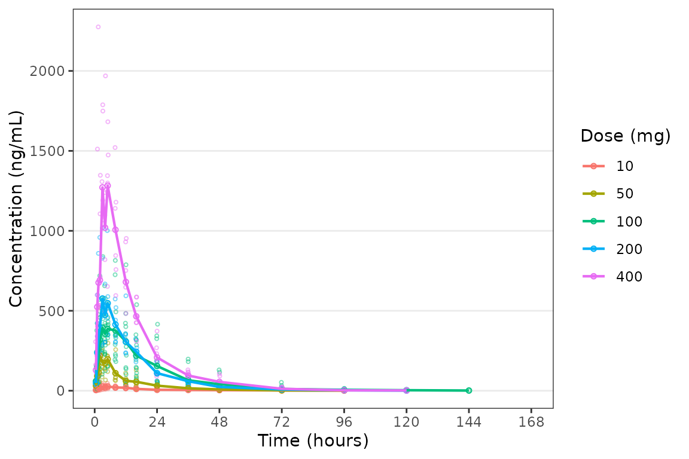
Adjusting Time Breaks
plot_dvtime includes uses a helper function
(breaks_time) to automatically determine x-axis breaks
based on the units of the time variable! Two arguments in
plot_dvtime are passed to breaks_time:
-
timeucharacter string specifying time units. Options include:- “hours” (default), “hrs”, “hr”, “h”
- “days”, “dys”, “dy”, “d”
- “weeks”, “wks”, “wk”, “w”
- “months”, “mons”, “mos”, “mo”, “m”
n_breaksnumber breaks requested from the algorithm. Default = 8.
Let’s pass the vector of nominal times we defined earlier into the
breaks_time function and see what we get with different
requested numbers of breaks!
breaks_time(ntimes, unit = "hours")
#> [1] 0 24 48 72 96 120 144 168
breaks_time(ntimes, unit = "hours", n = 5)
#> [1] 0 48 96 144
breaks_time(ntimes, unit = "hours", n = length(ntimes))
#> [1] 0.0 9.6 19.2 28.8 38.4 48.0 57.6 67.2 76.8 86.4 96.0 105.6
#> [13] 115.2 124.8 134.4 144.0 153.6 163.2We can see that the default (n = 8) gives an optimal number of breaks
in this case whereas reducing the number of breaks (n=5) gives a less
optimal distribution of values. Requesting breaks equal to the length of
the vector of unique NTIMES will generally produce too many
breaks. The default axes breaks behavior can always be overwritten by
specifying the axis breaks manually using
scale_x_continuous().
The default n_breaks = 8 is a good value for
data_sad, and data_sad uses the default time
units ("hours"); therefore, explicit specification of the
n_breaks and timeu arguments is not
required.
plot_dvtime(data = plot_data, dv_var = "ODV", col_var = "Dose (mg)", cent = "mean",
ylab = "Concentration (ng/mL)") 
However, perhaps someone on the team would prefer the x-axis breaks
in units of days. The x-axis breaks will transform to the
new units automatically as long as we specify the new time unit with
timeu = "days".
plot_data_days <- plot_data %>%
mutate(TIME = TIME/24,
NTIME = NTIME/24)
plot_dvtime(data = plot_data_days, dv_var = "ODV", col_var = "Dose (mg)", cent = "mean",
ylab = "Concentration (ng/mL)", timeu = "days") 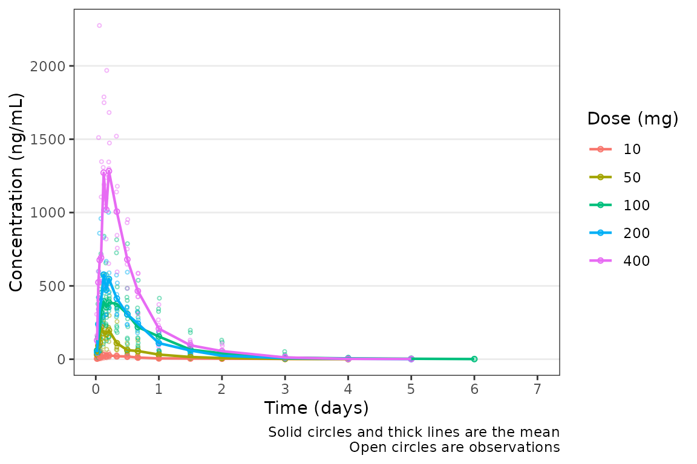
Nice! However, someone else on the team would prefer to see the first
24 hours of treatment in greater detail to visualize the absorption
phase. We can either truncate the x-axis range using
scale_x_continuous(), or filter the input data and allow
the x-axis breaks to adjust automatically with the new time range in the
input data!
plot_data_24 <- plot_data %>%
filter(NTIME <= 24)
plot_dvtime(data = plot_data_24, dv_var = "ODV", col_var = "Dose (mg)", cent = "mean",
ylab = "Concentration (ng/mL)") 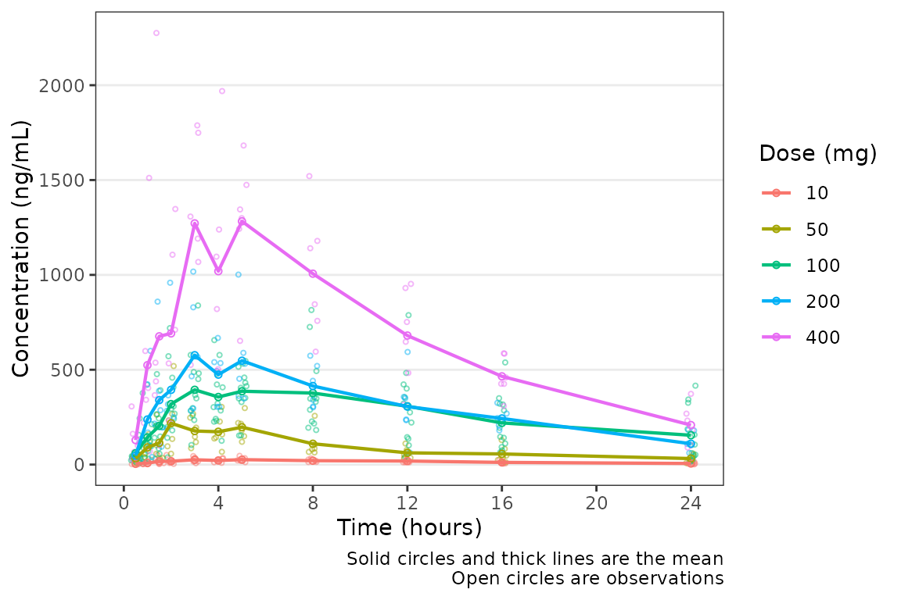
Specifying the Central Tendency
These data are probably best visualized on a log-scale y-axis
upweight the terminal phase profile. plot_dvtime includes
an argument log_y which performs this operation with some
additional formatting benefits over manually adding the layer to the
returned object with scale_y_log10.
- Includes log tick marks on the y-axis
- Updates the caption with the correct central tendency measure if
show_captions = TRUE.
plot_dvtime uses the stat_summary function
from ggplot2 to calculate and plot the central tendency
measures and error bars. An often overlooked feature of
stat_summary, is that it calculates the summary statistics
after any transformations to the data performed by changing the
scales. This means that when scale_y_log10() is applied to
the plot, the data are log-transformed for plotting and the central
tendency measure returned when requesting "mean" from
stat_summary is the geometric mean. If the
log_y argument is used to generate semi-log plots along
with show_captions = TRUE, then the caption will delineate
where arithmetic and gemoetric means are being returned.
plot_dvtime(data = plot_data, dv_var = "ODV", col_var = "Dose (mg)", cent = "mean",
ylab = "Concentration (ng/mL)", log_y = TRUE) 
But wait…this plot is potentially misleading! The food effect portion of the study is being pooled together with the fasted data within the 100 mg dose.
Luckily, plot_dvtime returns a ggplot
object which we can modify like any other ggplot!
Therefore, we can facet by PART by simply adding in another layer to our
ggplot object.
plot_dvtime(data = plot_data, dv_var = "ODV", col_var = "Dose (mg)", cent = "mean",
ylab = "Concentration (ng/mL)", log_y = TRUE) +
facet_wrap(~PART)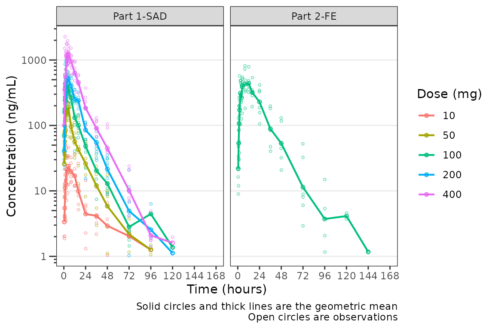
The clinical team would like a simpler plot that clearly displays the
central tendency. We can use the argument cent = "mean_sdl"
to plot the mean with error bars and remove the observed points by
specifying obs_dv = FALSE.
plot_dvtime(data = plot_data, dv_var = "ODV", col_var = "Dose (mg)", cent = "mean_sdl",
ylab = "Concentration (ng/mL)", log_y = TRUE,
obs_dv = FALSE) +
facet_wrap(~PART)
We may want to only show the upper error bar, especially when
computing the arithmetic mean +/- arithmetic SD on the linear scale.
This can be accomplished by changing the cent argument to
mean_sdl_upper.
plot_dvtime(data = plot_data, dv_var = "ODV", col_var = "Dose (mg)", cent = "mean_sdl_upper",
ylab = "Concentration (ng/mL)", obs_dv = FALSE) +
facet_wrap(~PART)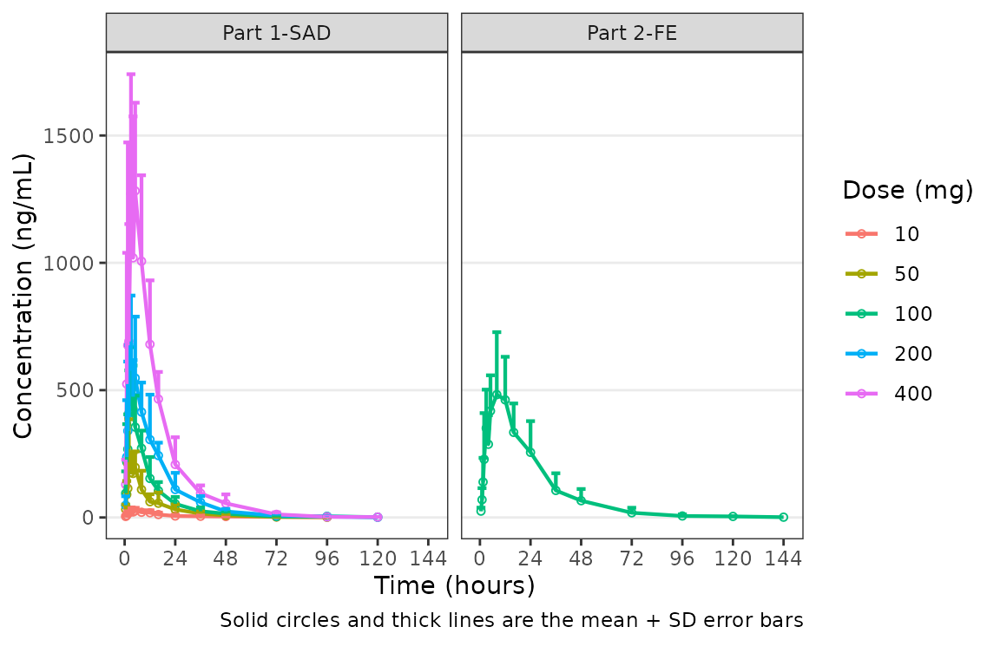
We could also plot these data as median + interquartile range (IQR)
using, if we do not feel the sample size is sufficient for parametric
summary statistics. This can be accomplished by changing the
cent argument to median_iqr.
plot_dvtime(data = plot_data, dv_var = "ODV", col_var = "Dose (mg)", cent = "median_iqr",
ylab = "Concentration (ng/mL)", log_y = TRUE,
obs_dv = FALSE) +
facet_wrap(~PART)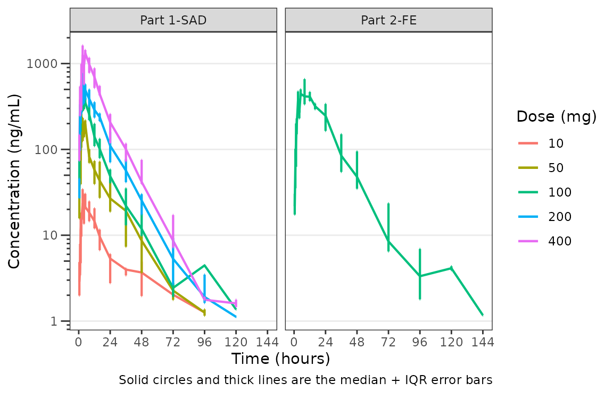
Hmm…there is some noise at the late terminal phase. This is likely artifact introduced by censoring of data at the assay LLOQ; however, let’s confirm there are no weird individual subject profiles by connecting observed data points longitudinally within a subject - in other words, let’s make spaghetti plots!
We will change the central tendency measure to the median and add the
spaghetti lines. Data points within an individual value of
grp_var will be connected by a narrow line when
grp_dv = TRUE. The default is
grp_var = "ID".
plot_dvtime(data = plot_data, dv_var = "ODV", col_var = "Dose (mg)", cent = "median",
ylab = "Concentration (ng/mL)", log_y = TRUE,
grp_dv = TRUE) +
facet_wrap(~PART)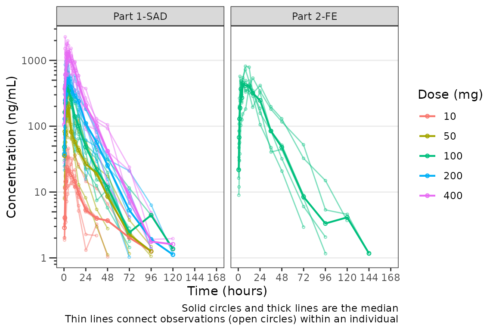
It does not seem like there are outlier individuals driving the noise in the late terminal phase; therefore, this is almost certainly artifact introduced by data missing due to assay sensitivity and censoring at the lower limit of quantification (LLOQ).
Defining imputations for BLQ data
Let’s use imputation to assess the potential impact of the data
missing due to assay sensitivity. plot_dvtime includes some
functionality to do this imputation for us using the loq
and loq_method arguments.
The loq_method argument species how BLQ imputation
should be performed. Options are:
-
0: No handling. Plot input datasetDVvsTIMEas is. (default) -
1: Impute all BLQ data atTIME<= 0 to 0 and all BLQ data atTIME> 0 to 1/2 xloq. Useful for plotting concentration-time data with some data BLQ on the linear scale -
2: Impute all BLQ data atTIME<= 0 to 1/2 xloqand all BLQ data atTIME> 0 to 1/2 xloq.
The loq argument species the value of the LLOQ. The
loq argument must be specified when loq_method
is 1 or 2, but can be NULL
if the variable LLOQ is present in the dataset. In
our case, LLOQ is a variable in plot_data, so
we do not need to specify the loq argument (default is
loq = NULL).
plot_dvtime(plot_data, dv_var = "ODV", col_var = "Dose (mg)", cent = "mean",
ylab = "Concentration (ng/mL)", log_y = TRUE,
loq_method = 2) +
facet_wrap(~PART)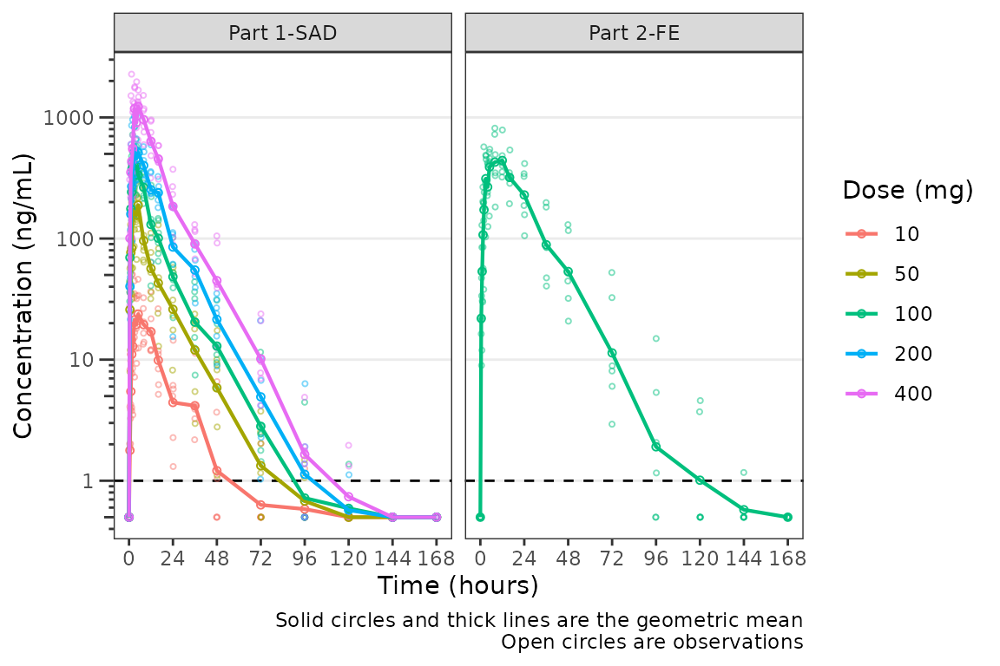
The same plot is obtained by specifying loq = 1
plot_dvtime(plot_data, dv_var = "ODV", col_var = "Dose (mg)", cent = "mean",
ylab = "Concentration (ng/mL)", log_y = TRUE,
loq_method = 2, loq = 1) +
facet_wrap(~PART)
A reference line is drawn to denote the LLOQ and all observations
with EVID=0 and MDV=1 are imputed as LLOQ/2.
Imputing post-dose concentrations below the lower limit of
quantification as 1/2 x LLOQ normalizes the late terminal phase of the
concentration-time profile. This is confirmatory evidence for our
hypothesis that the noise in the late terminal phase is due to censoring
of observations below the LLOQ.
Dose-normalization
We can also generate dose-normalized concentration-time plots by
specifying dosenorm = TRUE.
plot_dvtime(plot_data, dv_var = "ODV", col_var = "Dose (mg)", cent = "mean",
ylab = "Dose-normalized Conc. (ng/mL per mg Drug)", log_y = TRUE,
dosenorm = TRUE) +
facet_wrap(~PART)
When dosenorm = TRUE, the variable specified in
dose_var (default = “DOSE”) needs to be present in the
input dataset data. If dose_var is not present
in data, the function will return an Error with an
informative error message.
plot_dvtime(select(plot_data, -DOSE),
dv_var = "ODV", col_var = "Dose (mg)", cent = "mean",
ylab = "Dose-normalized Conc. (ng/mL per mg Drug)", log_y = TRUE,
dosenorm = TRUE) +
facet_wrap(~PART)
#> Error in `check_varsindf()`:
#> ! argument `dose_var` must be variables in `data`Dose-normalization is performed AFTER BLQ imputation in the case in which both options are requested. The reference line for the LLOQ will not be plotted when dose-normalized concentration is the dependent variable.
plot_dvtime(plot_data, dv_var = "ODV", col_var = "Dose (mg)", cent = "mean",
ylab = "Dose-normalized Conc. (ng/mL per mg Drug)", log_y = TRUE,
loq_method = 2, dosenorm = TRUE) +
facet_wrap(~PART)
Adjusting the Color and Group Aesthetics
Only a single variable can be passed to the col_var
argument of plot_dvtime. Suppose we want to look at the
interaction between two variables in the color aesthetic. This can be
accomplished using the interaction function within the
aes call, which computes an unordered factor representing
the interaction between the two variables. Let’s visualize the
interaction between the factor versions of the variables
DOSE and FOOD.
ggplot(plot_data, aes(x = TIME, y = ODV, col = interaction(`Dose (mg)`, `Food Status`))) +
geom_point()+
stat_summary(data = plot_data, aes(x = NTIME, y = ODV, col = interaction(`Dose (mg)`, `Food Status`)),
fun.y = "mean", geom = "line") +
scale_x_continuous(breaks = seq(0,168,24)) +
scale_y_log10()+
theme_bw() +
labs(y = "Concentration (ng/mL)", x = "Time (hours)")The functionality of interaction() cannot be used within
plot_dvtime; however, we can reproduce it by formally
creating a variable for the interaction we want to visualize. This also
affords us the opportunity to define the factor labels, levels, and
order, which will affect how the interaction is displayed on the
plot.
plot_data_int <- plot_data %>%
mutate(`Dose (mg) and Food` = ifelse(FOOD == 0, paste(DOSE, "mg", "Fasted"), paste(DOSE, "mg", "Fed")),
`Dose (mg) and Food` = factor(`Dose (mg) and Food`, levels = c("10 mg Fasted",
"50 mg Fasted",
"100 mg Fasted",
"100 mg Fed",
"200 mg Fasted",
"400 mg Fasted")))
plot_dvtime(plot_data_int, dv_var = "ODV", col_var = "Dose (mg) and Food", cent = "mean",
ylab = "Concentration (ng/mL)", log_y = TRUE,
loq_method = 2)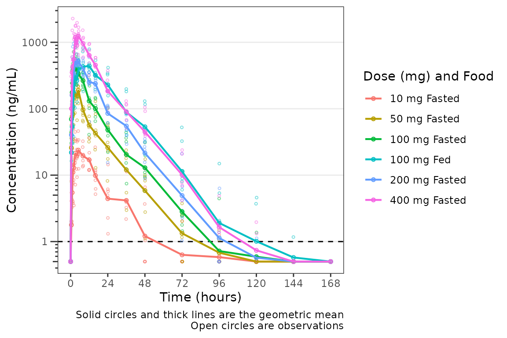
This looks pretty nice! The legend is formatted cleanly and the
colors are assigned to each unique condition of the interaction.
However, we can actually take this one step further, and define our
interaction variable as an ordered factor, which results
ggplot2 applying the viridis color scale from the
viridisLite package.
plot_data_int_ordered <- plot_data %>%
mutate(`Dose (mg) and Food` = ifelse(FOOD == 0, paste(DOSE, "mg", "Fasted"), paste(DOSE, "mg", "Fed")),
`Dose (mg) and Food` = factor(`Dose (mg) and Food`, levels = c("10 mg Fasted",
"50 mg Fasted",
"100 mg Fasted",
"100 mg Fed",
"200 mg Fasted",
"400 mg Fasted"),
ordered = TRUE))
plot_dvtime(plot_data_int_ordered, dv_var = "ODV", col_var = "Dose (mg) and Food", cent = "mean",
ylab = "Concentration (ng/mL)", log_y = TRUE,
loq_method = 2)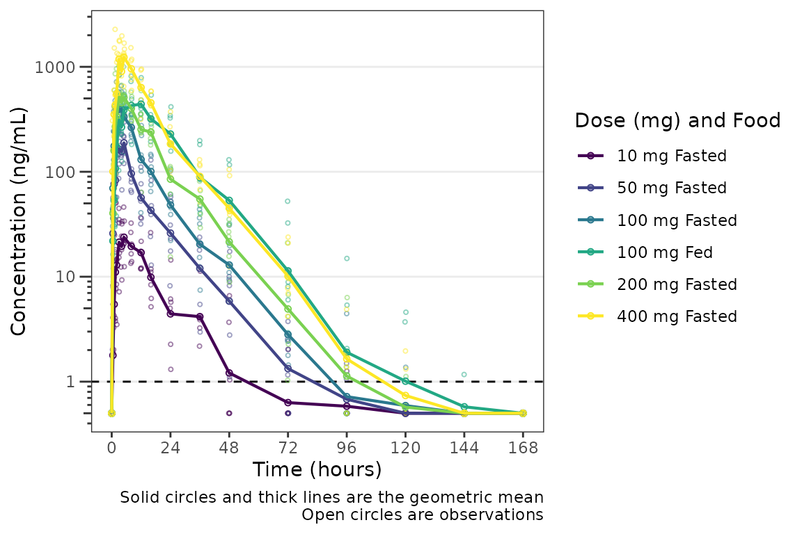
The same approach can be used to define an interaction variable to be
assigned to the group aesthetic using the grp_var argument
to plot_dvtime. Such an approach may be used if we wanted
to visualize the data for a cross-over study condition separately for
each period within an individual. In this case, the default
grp_var = "ID" would connect all data points within an
individual across both periods whereas we actually want to visualize
points connected within the individual "ID" separately by
cross-over period.
To explore this, we will modify data_sad such that the
same subjects are included in "PART1-SAD" and
"PART2-FE (e.g., modify from a parallel group design to a
crossover design).
plot_data_crossover <- plot_data %>%
mutate(ID = ifelse(FOOD == 1, ID - 6, ID))
plot_data_crossover %>%
select(ID, DOSE, FOOD) %>%
distinct() %>%
group_by(ID) %>%
filter(max(FOOD) == 1) %>%
arrange(ID, FOOD)
#> # A tibble: 12 × 3
#> # Groups: ID [6]
#> ID DOSE FOOD
#> <dbl> <dbl> <dbl>
#> 1 13 100 0
#> 2 13 100 1
#> 3 14 100 0
#> 4 14 100 1
#> 5 15 100 0
#> 6 15 100 1
#> 7 16 100 0
#> 8 16 100 1
#> 9 17 100 0
#> 10 17 100 1
#> 11 18 100 0
#> 12 18 100 1Now we have a dataset with a cross-over design for the Food Effect
protion of the study. We can define a factor variable that is the
interaction between "ID" and "FOOD". Now when
we visualize the data, the data points will be connected within the
group defined by both variables.
plot_data_crossover_fid <- plot_data_crossover %>%
mutate(FID = interaction(ID, FOOD),
`Dose (mg) and Food` = ifelse(FOOD == 0, paste(DOSE, "mg", "Fasted"), paste(DOSE, "mg", "Fed")),
`Dose (mg) and Food` = factor(`Dose (mg) and Food`, levels = c("10 mg Fasted",
"50 mg Fasted",
"100 mg Fasted",
"100 mg Fed",
"200 mg Fasted",
"400 mg Fasted"),
ordered = TRUE))
plot_dvtime(plot_data_crossover_fid, dv_var = "ODV", col_var = "Dose (mg) and Food", cent = "mean",
grp_var = "FID", grp_dv = TRUE,
ylab = "Concentration (ng/mL)", log_y = TRUE,
loq_method = 2)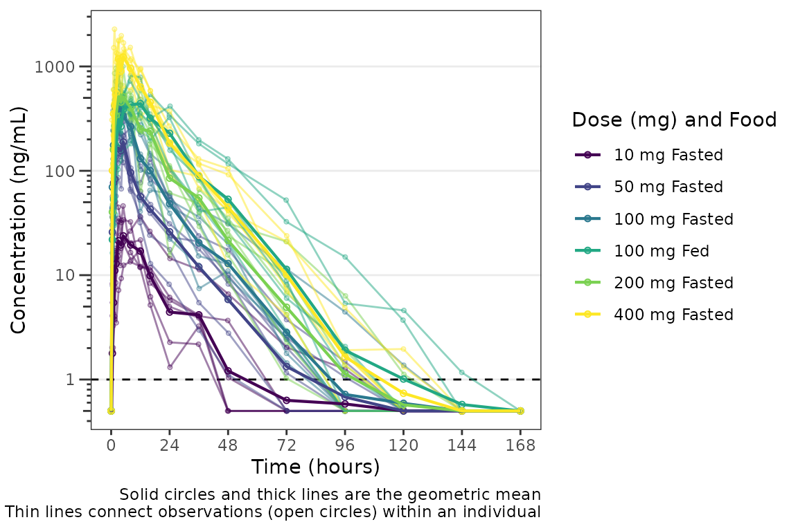
Adjusting the Attributes for Points and Lines
The default attributes of data points and lines are controlled by the
theme argument. The defaults
plot_dvtime_theme()
#> $linewidth_ref
#> [1] 0.5
#>
#> $linetype_ref
#> [1] 2
#>
#> $alpha_line_ref
#> [1] 1
#>
#> $shape_point_obs
#> [1] 1
#>
#> $size_point_obs
#> [1] 0.75
#>
#> $alpha_point_obs
#> [1] 0.5
#>
#> $linewidth_obs
#> [1] 0.5
#>
#> $linetype_obs
#> [1] 1
#>
#> $alpha_line_obs
#> [1] 0.5
#>
#> $shape_point_cent
#> [1] 1
#>
#> $size_point_cent
#> [1] 1.25
#>
#> $alpha_point_cent
#> [1] 1
#>
#> $linewidth_cent
#> [1] 0.75
#>
#> $linetype_cent
#> [1] 1
#>
#> $alpha_line_cent
#> [1] 1
#>
#> $linewidth_errorbar
#> [1] 0.75
#>
#> $linetype_errorbar
#> [1] 1
#>
#> $alpha_errorbar
#> [1] 1
#>
#> $width_errorbar
#> NULLThese attributes can be updated by passing a named list to the
theme argument. Say we want to reduce the linewidth of the
error bars and reduce the size of the mean summary points to only
visualize the lines. This can be accomplished for an individual plot as
follows:
plot_dvtime(data = plot_data, dv_var = "ODV", col_var = "Dose (mg)", cent = "mean_sdl",
ylab = "Concentration (ng/mL)", log_y = TRUE,
obs_dv = FALSE,
theme = list(linewidth_errorbar = 0.5, size_point_cent = 0.1)) +
facet_wrap(~PART)
One could also globally set a new theme by updating the default using
plot_dvtime_theme and pass the new theme list object to the
theme argument. This is useful if generating multiple plots
using the same modified theme.
new_theme <- plot_dvtime_theme(list(linewidth_errorbar = 0.5, size_point_cent = 0.1))
plot_dvtime(data = plot_data, dv_var = "ODV", col_var = "Dose (mg)", cent = "mean_sdl",
ylab = "Concentration (ng/mL)", log_y = TRUE,
obs_dv = FALSE,
theme = new_theme) +
facet_wrap(~PART)
The default error bar width is 2.5% of the maximum nominal time in
the dataset. This can be overwritten to a user-specified value using the
width_errorbar attribute of plot_dvtime_theme.
This value is passed to the width argument of
geom_errorbar.
plot_dvtime(data = plot_data, dv_var = "ODV", col_var = "Dose (mg)", cent = "mean_sdl",
ylab = "Concentration (ng/mL)", log_y = TRUE,
obs_dv = FALSE,
theme = list(width_errorbar = 8)) +
facet_wrap(~PART)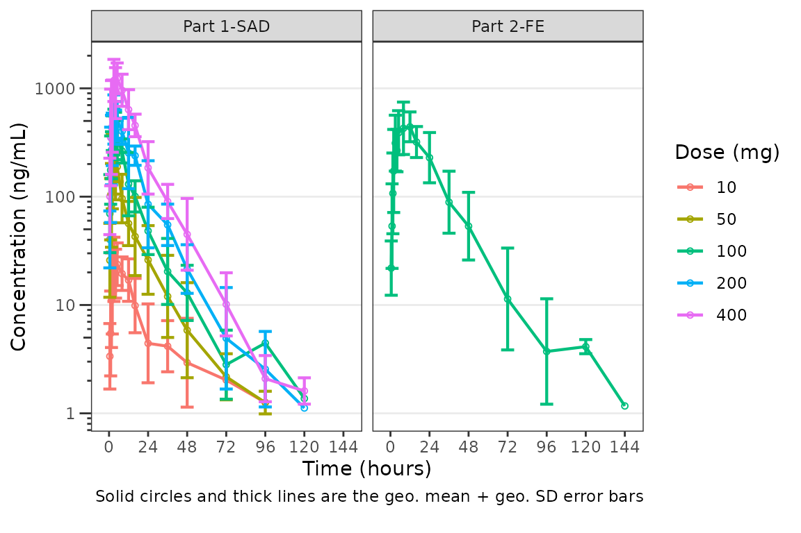
Individual Concentration-time plots
The previous section provides an overview of how to generate
population concentration-time profiles by dose using
plot_dvtime; however, we can also use
plot_dvtime to generate subject-level visualizations with a
little pre-processing of the input dataset.
We can specify cent = "none" to remove the central
tendency layer when plotting individual subject data.
plot_dvtime(plot_data, dv_var = "ODV", col_var = "Dose (mg)", cent = "none",
ylab = "Concentration (ng/mL)", log_y = TRUE,
grp_dv = TRUE,
loq_method = 2, loq = 1) +
facet_wrap(~PART)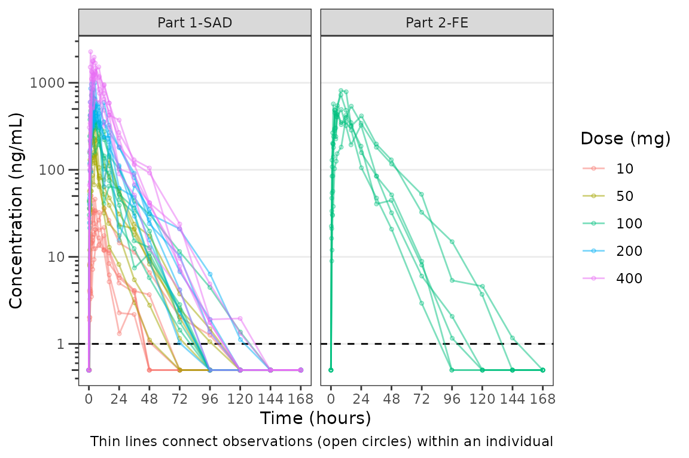
We can plot an individual subject by filtering the input dataset.
This could be extended generate plots for all individuals using
for loops, lapply, purrr::map()
functions, or other methods.
ids <- sort(unique(plot_data$ID)) #vector of unique subject ids
n_ids <- length(ids) #count of unique subject ids
plots_per_pg <- 4
n_pgs <- ceiling(n_ids/plots_per_pg) #Total number of pages needed
plist<- list()
for(i in 1:n_ids){
plist[[i]] <- plot_dvtime(filter(plot_data, ID == ids[i]),
dv_var = "ODV", col_var = "Dose (mg)", cent = "none",
ylab = "Concentration (ng/mL)", log_y = TRUE,
grp_dv = TRUE,
loq_method = 2, loq = 1, show_caption = FALSE) +
facet_wrap(~PART)+
labs(title = paste0("ID = ", ids[i], " | Dose = ", unique(plot_data$DOSE[plot_data$ID==ids[i]]), " mg"))+
theme(legend.position="none")
}
lapply(1:n_pgs, function(n_pg) {
i <- (n_pg-1)*plots_per_pg+1
j <- n_pg*plots_per_pg
wrap_plots(plist[i:j])
})
#> [[1]]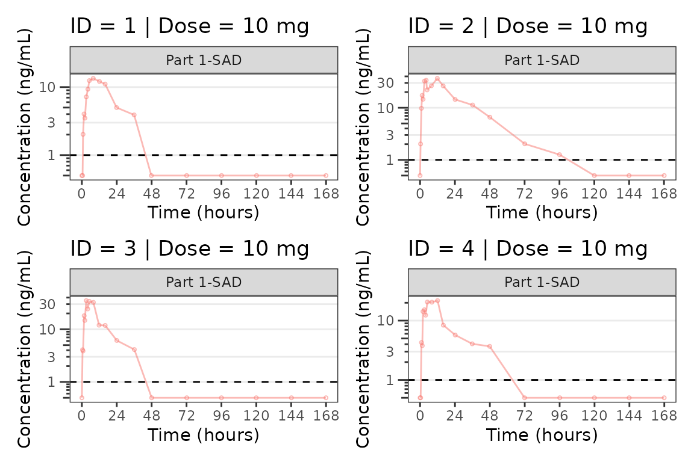
#>
#> [[2]]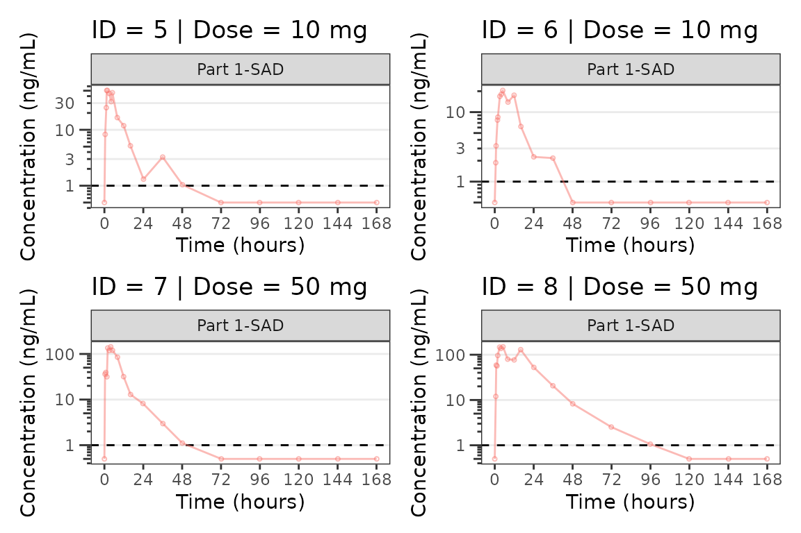
#>
#> [[3]]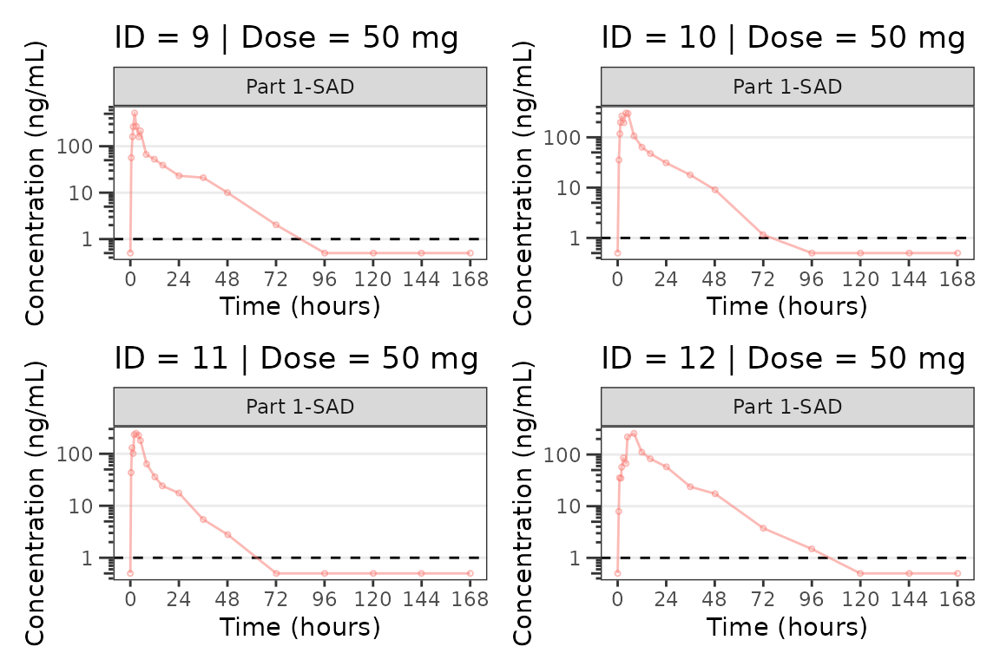
#>
#> [[4]]
#>
#> [[5]]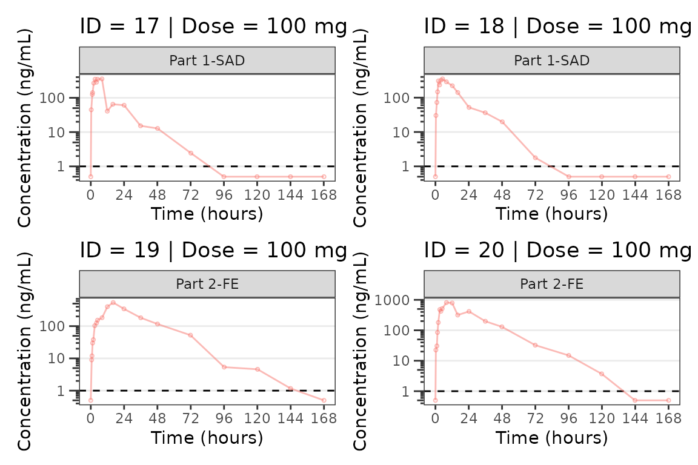
#>
#> [[6]]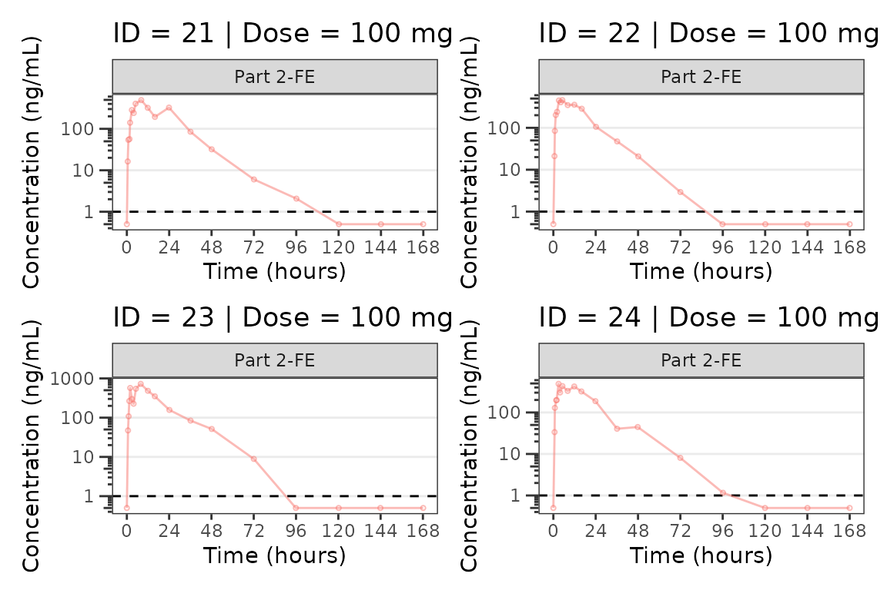
#>
#> [[7]]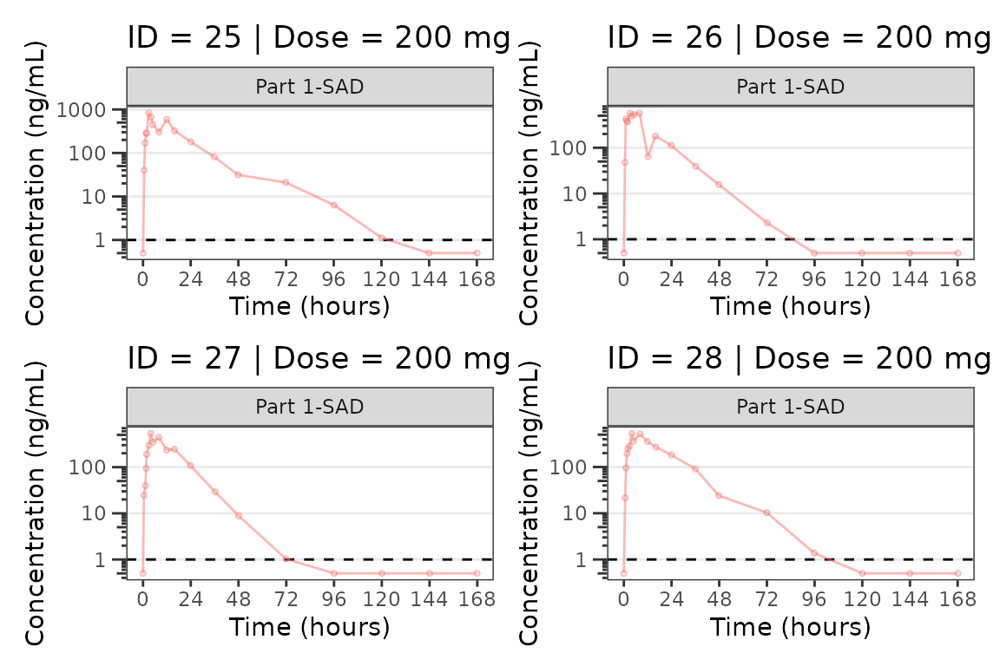
#>
#> [[8]]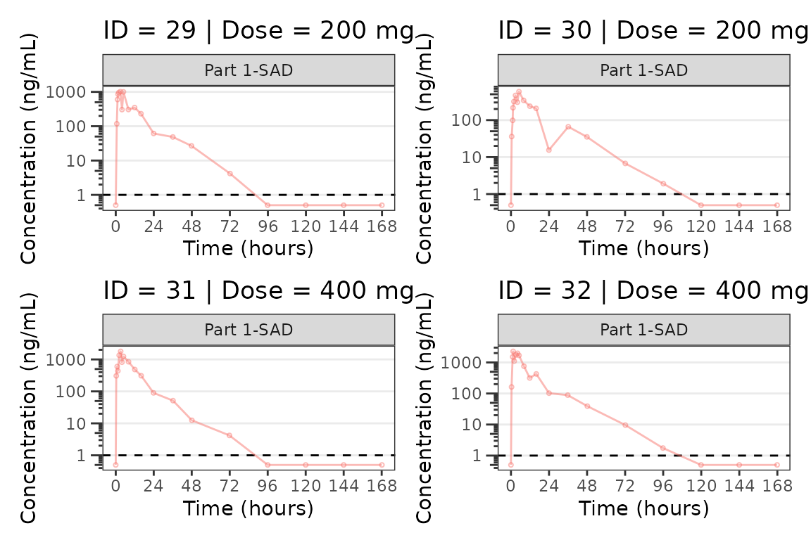
#>
#> [[9]]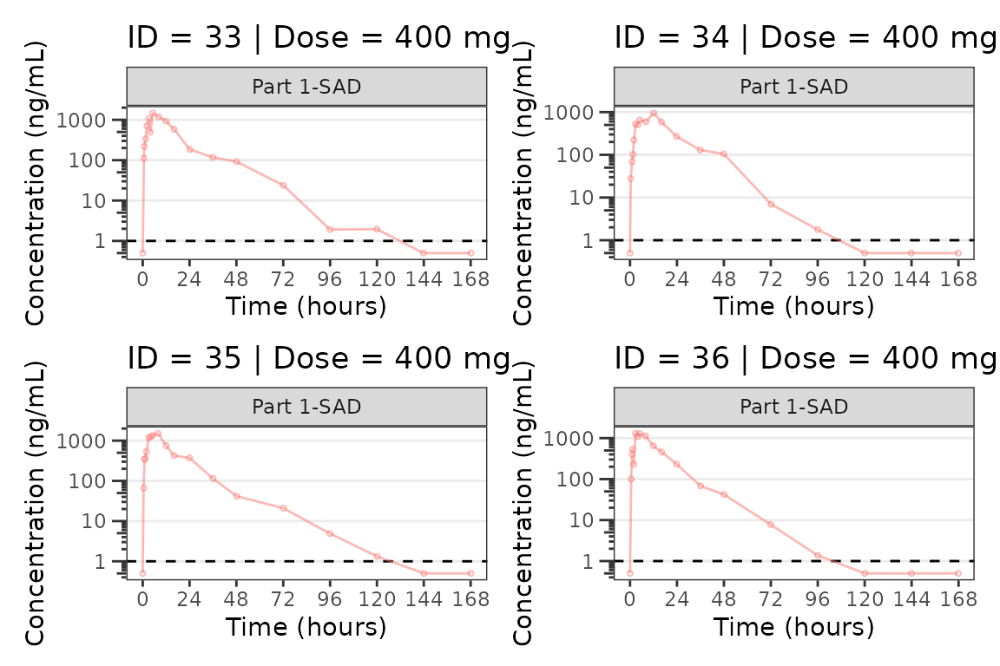
Dose-proportionality Assessment: Power Law Regression
Another assessment that is commonly performed for pharmacokinetic data is dose proportionality (e.g., does exposure increase proportionally with dose). This is an important assessment prior to population PK modeling, as it informs whether non-linearity is an important consideration in model development.
The industry standard approach to assessing dose proportionality is power law regression. Power law regression is based on the following relationship:
This power relationship can be transformed to a linear relationship to support quantitative estimation of the power () via simple linear regression by taking the logarithm of both sides:
NOTE: Use of natural logarithm and log10 transformations
will not impact the assessment of the power and will only shift the
intercept.
This approach facilitates hypothesis testing via assessment of the 95% CI around the power () estimated from the log-log regression. The null hypothesis is that exposure increases proportionally to dose (e.g., ) and the alternative hypothesis is that exposure does NOT increase proportionally to dose (e.g., ).
Interpretation of the relationship is based on the 95% CI of the estimate as follows:
- 95% CI includes one (1): exposure increases proportionally to dose
- 95% CI excludes one (1) & is less than 1: exposure increases less-than-proportionally to dose
- 95% CI excludes one (1) & is greater than 1: exposure increases greater-than-proportionally to dose
This assessment is generally performed based on both maximum concentration (Cmax) and area under the concentration-time curve (AUC). While not a hard and fast rule, some inference can be drawn about which phase of the pharmacokinetic profile is most likely contributing the majority of the non-linearity of exposure with dose.
- AUC = NOT dose-proportional | Cmax = dose-proportional = elimination phase
- AUC = dose-proportional | Cmax = NOT dose-proportional = absorption phase (rate)
- AUC = NOT dose-proportional | Cmax = NOT dose-proportional = absorption phase (extent)
These exploratory assessments provide quantitative support for structural PK model decision-making. Practically speaking, non-linearities in absorption rate are rarely impactful, and the modeler is really deciding between dose-dependent bioavailability and concentration-dependent elimination (e.g., Michaelis-Menten kinetics, target-mediated drug disposition [TMDD])
Step 1: Derive NCA Parameters
The first step in performing this assessment is deriving the
necessary NCA PK parameters. NCA software (e.g., Phoenix WinNonlin) is
quite expensive; however, thankfully there is an excellent R package for
performing NCA analyses - PKNCA.
Refer to the documentation for the PKNCA packge for
details. This vignette will not provide a detailed overview of
PKNCA functions and workflows.
First, let’s set the options for our NCA analysis and define the
intervals over which we want to obtain the NCA parameters. The
data_sad dataset internal to pmxhelpr is a
single ascending dose (SAD) design with a parallel food effect (FE)
cohort; therefore, our interval is [0,
]
##Set NCA options
PKNCA.options(conc.blq = list("first" = "keep",
"middle" = unique(data_sad$LLOQ[!is.na(data_sad$LLOQ)]),
"last" = "drop"),
allow.tmax.in.half.life = FALSE,
min.hl.r.squared = 0.9)
##Calculation Intervals and Requested Parameters
intervals <-
data.frame(start = 0,
end = Inf,
auclast = TRUE,
aucinf.obs = TRUE,
aucpext.obs = TRUE,
half.life = TRUE,
cmax = TRUE,
vz.obs = TRUE,
cl.obs = TRUE
) Next, we will set up our dose and concentration objects and perform
the NCA using PKNCA
#Impute BLQ concentrations to 0 (PKNCA formatting)
data_sad_nca_input <- data_sad %>%
mutate(CONC = ifelse(is.na(ODV), 0, ODV),
AMT = AMT/1000) #Convert from mg to ug (concentration is ng/mL = ug/L)
#Build PKNCA objects for concentration and dose including relevant strata
conc_obj <- PKNCAconc(filter(data_sad_nca_input, EVID==0), CONC~TIME|ID+DOSE+PART)
dose_obj <- PKNCAdose(filter(data_sad_nca_input, EVID==1), AMT~TIME|ID+PART)
nca_data_obj <- PKNCAdata(conc_obj, dose_obj, intervals = intervals)
nca_results_obj <- as.data.frame(pk.nca(nca_data_obj))
glimpse(nca_results_obj)
#> Rows: 648
#> Columns: 8
#> $ ID <dbl> 1, 1, 1, 1, 1, 1, 1, 1, 1, 1, 1, 1, 1, 1, 1, 1, 1, 1, 2, 2, 2…
#> $ DOSE <dbl> 10, 10, 10, 10, 10, 10, 10, 10, 10, 10, 10, 10, 10, 10, 10, 1…
#> $ PART <chr> "Part 1-SAD", "Part 1-SAD", "Part 1-SAD", "Part 1-SAD", "Part…
#> $ start <dbl> 0, 0, 0, 0, 0, 0, 0, 0, 0, 0, 0, 0, 0, 0, 0, 0, 0, 0, 0, 0, 0…
#> $ end <dbl> Inf, Inf, Inf, Inf, Inf, Inf, Inf, Inf, Inf, Inf, Inf, Inf, I…
#> $ PPTESTCD <chr> "auclast", "cmax", "tmax", "tlast", "clast.obs", "lambda.z", …
#> $ PPORRES <dbl> 277.7701457207, 13.4300000000, 7.8100000000, 35.9500000000, 3…
#> $ exclude <chr> NA, NA, NA, NA, NA, NA, NA, NA, NA, NA, NA, NA, NA, NA, NA, N…The NCA results object output from PKNCA is formatted
using the variable names in SDTM standards for the
PP domain (Pharmacokinetic Parameters). This NCA output
dataset is also available internally within pmxhelpr as
data_sad_nca with a few additional columns specifying
units.
glimpse(data_sad_nca)
#> Rows: 612
#> Columns: 11
#> $ ID <dbl> 1, 1, 1, 1, 1, 1, 1, 1, 1, 1, 1, 1, 1, 1, 1, 1, 1, 2, 2, 2,…
#> $ DOSE <dbl> 10, 10, 10, 10, 10, 10, 10, 10, 10, 10, 10, 10, 10, 10, 10,…
#> $ PART <chr> "Part 1-SAD", "Part 1-SAD", "Part 1-SAD", "Part 1-SAD", "Pa…
#> $ start <dbl> 0, 0, 0, 0, 0, 0, 0, 0, 0, 0, 0, 0, 0, 0, 0, 0, 0, 0, 0, 0,…
#> $ end <dbl> Inf, Inf, Inf, Inf, Inf, Inf, Inf, Inf, Inf, Inf, Inf, Inf,…
#> $ PPTESTCD <chr> "auclast", "cmax", "tmax", "tlast", "clast.obs", "lambda.z"…
#> $ PPORRES <dbl> 277.7701457207, 13.4300000000, 7.8100000000, 35.9500000000,…
#> $ exclude <chr> NA, NA, NA, NA, NA, NA, NA, NA, NA, NA, NA, NA, NA, NA, NA,…
#> $ units_dose <chr> "mg", "mg", "mg", "mg", "mg", "mg", "mg", "mg", "mg", "mg",…
#> $ units_conc <chr> "ng/mL", "ng/mL", "ng/mL", "ng/mL", "ng/mL", "ng/mL", "ng/m…
#> $ units_time <chr> "hours", "hours", "hours", "hours", "hours", "hours", "hour…We will need to select the relevant PK parameters from this dataset
for input into our power law regression analysis of
dose-proportionality. Thankfully, pmxhelpr handles the
filtering and power law regression in one step with functions for
outputting either tables or plots of results!
Step 2: Perform Power Law Regression
The df_doseprop function is a wrapper function which
bundles two other pmxhelpr functions:
-
mod_logloga function to perform log-log regression which returns almobject -
df_logloga function to tabulate the power estimate and CI which returns adata.frame
There are two required arguments to df_doseprop.
-
dataadata.framecontaining NCA parameter estimates -
metricsa character vector of NCA parameters to evaluate in log-log regression
power_table <- df_doseprop(data_sad_nca, metrics = c("aucinf.obs", "cmax"))
power_table
#> Intercept StandardError CI Power LCL UCL Proportional
#> 1 4.04 0.0663 95% 0.997 0.867 1.13 TRUE
#> 2 1.09 0.0616 95% 1.070 0.947 1.19 TRUE
#> PowerCI Interpretation PPTESTCD
#> 1 Power: 0.997 (95% CI 0.867-1.13) Dose-proportional aucinf.obs
#> 2 Power: 1.07 (95% CI 0.947-1.19) Dose-proportional cmaxThe table includes the relevant estimates from the power law regression (intercept, standard error, power, lower confidence limit, upper confidence limit), as well as, a logical flag for dose-proportionality and text interpretation.
Based on this assessment, these data appear dose-proportional for both Cmax and AUC! However, we should not include the food effect part of the study in this assessment, as food could also influence these parameters, and confounds the assessment of dose proportionality. The most important thing is to understand the input data!
Let’s run it again, but this time only include
Part 1-SAD.
power_table <- df_doseprop(filter(data_sad_nca, PART == "Part 1-SAD"), metrics = c("aucinf.obs", "cmax"))
power_table
#> Intercept StandardError CI Power LCL UCL Proportional
#> 1 3.97 0.0438 95% 0.979 0.893 1.07 TRUE
#> 2 1.06 0.0616 95% 1.060 0.939 1.18 TRUE
#> PowerCI Interpretation PPTESTCD
#> 1 Power: 0.979 (95% CI 0.893-1.07) Dose-proportional aucinf.obs
#> 2 Power: 1.06 (95% CI 0.939-1.18) Dose-proportional cmaxIn this case, the interpretation is unchanged with and without
inclusion of the food effect cohort. df_doseprop provides
two arguments for defining the confidence interval.
-
method: method to derive the upper and lower confidence limits. The default is"normal", specifying use of the normal distribution, with"tdist"as an alternative, specifying use of the t-distribution. The t-distribution is preferred for analyses with smaller sample sizes -
ci: width of the confidence interval. The default is0.95(95% CI) with0.90(90% CI) as an alternative
Step 3: Visualize the Power Law Regression
We can also visualize these data using the plot_doseprop
function. This function leverages the linear regression option within
ggplot2::geom_smooth() to perform the log-log regression
for visualization and pulls in the functionality of
df_doseprop to extract the power estimate and CI into the
facet label.
The required arguments to plot_doseprop are the same as
df_doseprop!
plot_doseprop(filter(data_sad_nca, PART == "Part 1-SAD"), metrics = c("aucinf.obs", "cmax"))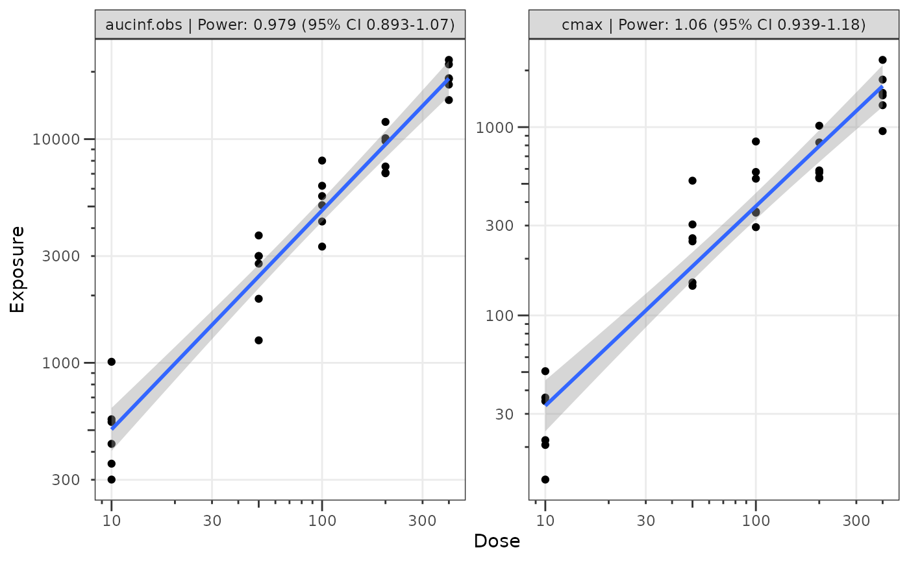